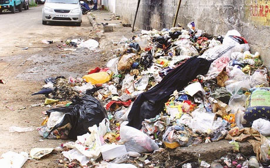

Report Issues.
Track Progress.
Demand Action.
A real-time civic governance platform empowering citizens to map community issues and hold authorities accountable — transparently.
A real-time civic governance platform empowering citizens to map community issues and hold authorities accountable — transparently.

Open the live map, tap on the exact location of the issue, and our geolocation engine tags precise GPS coordinates automatically. No address lookup needed — just point and report.

Attach images directly from your camera or gallery. Visual evidence helps authorities prioritize and understand the severity of the issue — no guessing, just clear proof.

Every complaint is publicly visible. Track your report as it moves from Pending → In Progress → Resolved in real-time on the dashboard.

When authorities claim the work is done, the ticket enters "Awaiting Confirmation." You personally verify the fix before the report can close — ensuring genuine accountability.
Everything a civic-engaged citizen needs.
All reported issues displayed on a dark-themed interactive map with category-colored markers and cluster views.
Upload images directly with your complaint. Visual proof speeds up authority response and accountability.
Get instant toast alerts when your complaint status changes. Stay informed without refreshing.
Authority dashboard with charts showing complaint trends, category breakdowns, and resolution rates.
Powered by Supabase Auth with role-based access. Citizens report, authorities resolve.
Toggle a heatmap layer to visualize problem density. Helps authorities prioritize high-impact zones.

Join CivicLens and help build a more transparent, responsive city.
Create Free Account